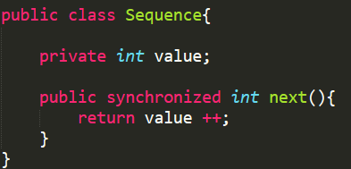
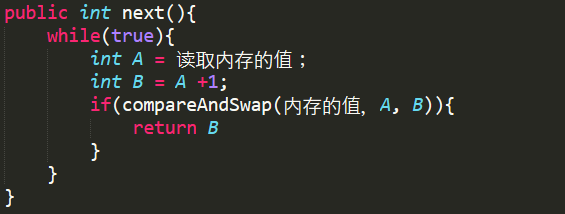
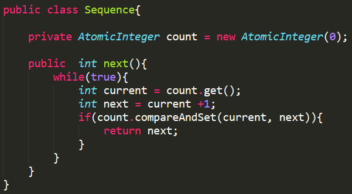

【转载】加锁还是不加锁，这是一个问题
非常浅显易懂又寓意深刻的一篇文章，转载自微信公众号【码农翻身】的文章，好文分享：加锁还是不加锁，这是一个问题，原文链接： http://mp.weixin.qq.com/s/qJNQeuDWjRCxkSG2nSK5Uw
一、前言
上次我说过，我们这个线程的世界是个弱肉强食的地方，大家为了争抢资源大打出手，时不时闹出些内存数据互相被覆盖的事故，给人类带了无穷的烦恼。
后来线程元老院强势出手，发明了一种锁的机制，这才制止了内乱。从此以后我们要访问共享的资源（共享变量，文件…）都得想办法先申请到一把锁才可以。
（码农君注：关于锁的故事在《编程世界中的那把锁》有讲述）
二、互斥锁
虽说锁是个好东西，但是我们线程日常使用的都是互斥锁，所谓互斥，就是同一时刻只有获得锁的那个线程才有资格去操作共享资源，别的线程都阻塞住了，被放到了一个叫锁池（ Lock pool ）的地方，什么事情都干不了。

比如说这个简单的 Sequence 类吧，有 100 个线程拼命地挤破头去进入 next() 方法，但由于 synchronized 的存在，大家必须得获得一把锁才可以，隔壁的小明运气不错，获得了操作系统的垂青，喜滋滋地得到了宝贵的锁，进入了 next() 方法去做事了。
而我们剩下的 99 个线程大眼瞪小眼，除了叹口气，感慨下人生之不如意十之八九，还能干嘛？
老老实实地进入锁池里待着去吧！
等到隔壁小明做完了事情，美滋滋地拿着最新的 value 值出来以后，我们这 99 个在锁池里吹牛的线程一跃而起，去竞争那个刚刚被释放的锁。
但是下一个幸运儿是谁呢？不知道？
有时候人类为了公平，会搞个队列让我们排好队，先进先出。但是我已经活了 4.998 秒，人生快走到了尽头，在这么长的人生里，我体会到的真理是：公平实在是个稀缺货，不公平才是常态！
所以年轻人不要老是抱怨这个社会，没用的，还是老老实实的奋斗吧。
三、不要加锁？
平淡的日子就这么过着，有一天线程世界来了一个年轻人，自称为小李，他看着我们这么努力地奋斗着去争抢那把锁，不由地嘲笑道：你们真傻啊，难道不知道不加锁也能做事吗？
我们愣了一下，人群中立刻发出一阵爆笑：哈哈哈，这小子疯了，没有锁岂不又回到互相覆盖数据的日子了！
小李不甘示弱：你们这帮土老帽，把元老院的那帮老家伙的话当做圣旨，岂不知天外有天，人外有人，这世界大得很呐！
这句话把我们镇住了，我小心翼翼地问：那你说说，不加锁怎么才能保证正确性呢？
就拿你们的那个 Sequence 类来说吧，不就是并发的更新内存中的一个值吗，可以这么分为三步来做：
- 从内存中读取
value值，假设为 10 ，我们把这个值称为A B = A + 1得到B = 11- 用
A和内存的值相比，如果相等（就是说在过去的一段时间，没人修改内存的值），那就把B的值（ 11 ）写入内存，如果不相等（就是说过去的一段时间，有人修改了内存value的值），意味着A已经不是最新值了，那就放弃这次修改，跳回第 1 步去
我们面面相觑，就这么简单？真的没有加锁啊。
隔壁的小明反应最快：小李子，你这第三步有问题啊，你看需要读内存吧，需要比较吧，还得写入内存吧，这不是一个原子操作，在我们多线程并发执行的时候，肯定会出问题！
小李说： “唉，说你们老土吧，你们还不服气，听说过 comare and swap 这个硬件指令没有？那个第三步其实就是一条硬件指令，保证原子执行。在单个CPU上就不用说了，如果是有多个CPU，这个指令甚至会锁住总线，确保同一时刻只有一个CPU能访问内存！
这样吧，干脆写成个指令： compareAndSwap(内存的值，A ，B) ，这下子明白了吧？还不明白？估计是人类的语言你们听起来不太明白，来吧，给你们来点熟悉的代码：”

看到了我们熟悉的代码，我的脑海飞速盘算：
假定我和小明都同时进入了这段代码，都读到了内存的值 A = 10 ，然后小明的时间片到了，只好退出CPU，我则愉快的继续执行。
对于我来说 A = 10 ， B = 11 ，然后我运行 compareAndSwap ，我发现我的 A 值和内存值是相等的，于是就把新的值 B 写入内存，并且返回，退出 next 函数，收工回家。
等到小明再次被运行的时候，由于他的初始值 A 也是 10 ，他也得到 B = 11 ，当他运行 compareAndSwap 就发现 A 的值和内存不相等了（因为我改成了 11 ），那小明只好再次循环，获得 A = 11，B = 12 ，再次调用 compareAndSwap ，如果还是被别人抢了先，小明只好再次循环，从内存获得 A = 12 ，B =13 …. 直到成功为止。
想到小明一直循环下去，累得要死的样子，我“邪恶”地笑了。
我抬起头，正好和小明的目光相遇，看到他不怀好意的样子，估计也是把我置于无限循环的想象中了。
四、Java中的CAS
小李说： “ Compare And Swap 这个词太长了，以后简称 CAS ，希望你们听得懂。”
小明问道：“我们是 Java 语言，你那个读取内存的值该怎么办，还有那个 compareAndSwap 函数，我们实现不了啊？”
小李说：“你们 Java 不是有 JNI(Java native interface) 吗？可以用 C 语言来实现，然后在 Java 中封装一下不就得了？”

“看看这个 AtomicInteger ，他就代表了那个内存的值，那个 count.compareAndSet 方法只有两个参数，实际上内存的值隐藏在了 AtomicInteger 当中，你们 Java 不是喜欢面向对象嘛！”
我们仔细地审视这段代码，它根本没有加锁，每个人都可以进入 next() 方法，读取数据，操作数据，最后使用 CAS 来决定这次操作是否有效，如果内存值被别人改过，那就再次循环尝试。
小李总结到：“你们之前的 synchronized 叫做悲观锁，元老院太悲观了，总是怕你们把事情搞砸，你看现在乐观一点儿，不也玩的挺好嘛！每个线程都不用阻塞，不用在那个无聊的锁池里待着。要知道，阻塞，激活是一笔不小的开销啊。”
五、CAS的扩展
使用非阻塞算法的线程越来越多，小李趁热打铁，提供了一系列所谓 Atomic 的类：
- AtomicBoolean
- AtomicInteger
- AtomicLong
- AtomicIntegerArray
- AtomicLongArray
这些工具类都很好用，大家非常喜欢，只是我们发现小李的这些工具类只支持简单的类型，对于一些复杂的数据结构，就不好使用 CAS 了，因为使用 CAS 需要频繁的读写内存数据，并且做数据的比较，如果数据结构很复杂，那读写内存是不可承受之重，还不如最早的悲观锁呢！
小李胸有成竹，马上给出了改进：不要比较数据啊，只比较引用不就得了，这里有一个 AtomicReference ，拿去用吧。
我们向元老院做了推荐，那些老家伙们可真是有两把刷子，立刻提出了一个我做梦都没有想到的问题：
假设有两个线程，线程 1 读到内存的数值为 A ，然后时间片到期，撤出 CPU 。线程 2 运行，线程 2 也读到了 A ，把它改成了 B ，然后又把 B 改成原来的值 A ，简单点说，修改的次序是 A -> B -> A 。然后线程 1 开始运行，它发现内存的值还是 A ，完全不知道内存中已经被操作过。
（码农君注： 这就是著名的 ABA 问题）
我想了一下，好像没什么啊，不就是把数字改成了原来的值吗？也没什么影响。
可是小李却陷入了沉思，看来这是一个挺难的问题，他口中念念有词：如果只是简单的数字，那没什么，可是如果使用 AtomicReference ，并且操作的是复杂的数据结构，就可能会出问题了。对了，我可以用一个版本号来处理啊，给每个放入 AtomicReference 的对象都加入一个 version ，这样以来尽管值相同，也能区分开了！嗯，我就叫他 AtomicStampedReference 吧。
元老院很满意，但是还是发了一个公告：
鉴于最近使用 AtomicXXXX 的线程越来越多，元老院有责任提醒各位，用这些类实现非阻塞算法是非常容易出错的，在你自己实现之前，看看元老院有没有提供现成的类，例如： ConcurrentLinkedQueue 。如果非要自己写，也得提交给元老院审查通过才可以使用。
六、后记： Doug Lea
如果说要从 Java 世界中找一个并发编程的大牛，我想这个人非 Doug Lea 莫属，从 JDK 1.5 开始， Java 引入了一个非常著名的线程并发库 java.util.concurrent ，由于其良好的抽象，这个库极大的降低了并发编程的难度，其作者就是并发编程的权威 Doug Lea ，他是纽约州立大学 Oswego 分校计算机科学系教授， JCP （ Java Community Process ）执行委员会成员， JSR166 （并发编程）的主席，文中的小李就是向 Doug Lea 致敬。

你看到的只是冰山一角，更多精彩文章，请移步《码农翻身文章精华》
有心得想和大家分享？ 欢迎投稿 ！ 我的联系方式：微信：liuxinlehan QQ: 3340792577
码农翻身
用故事给技术加点料